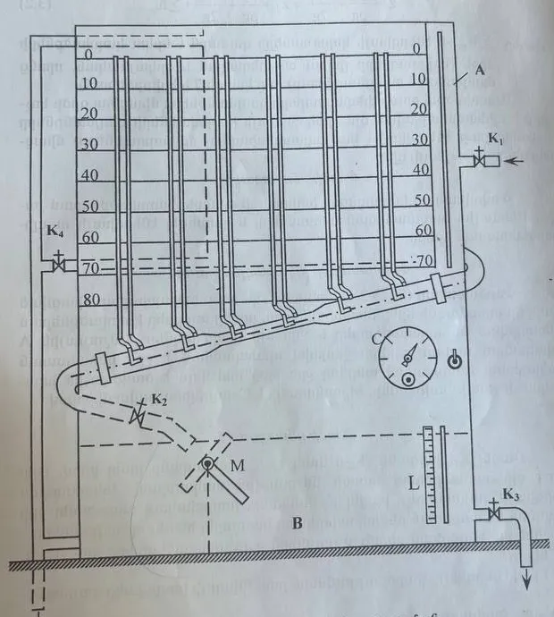
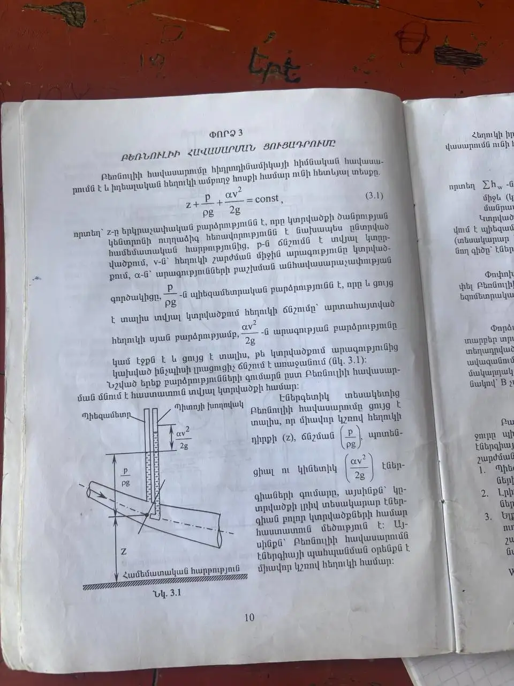
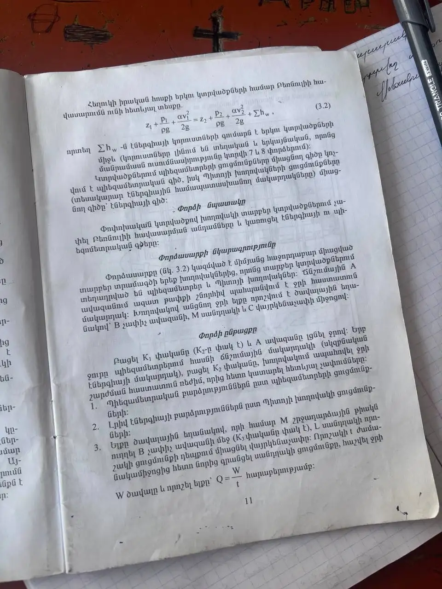
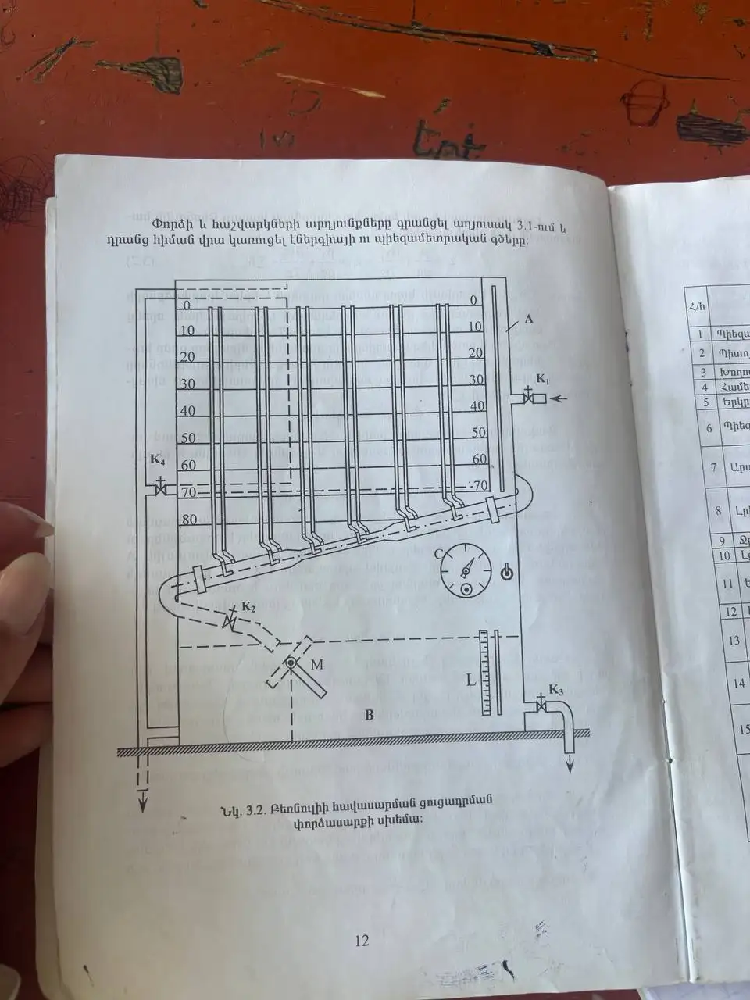
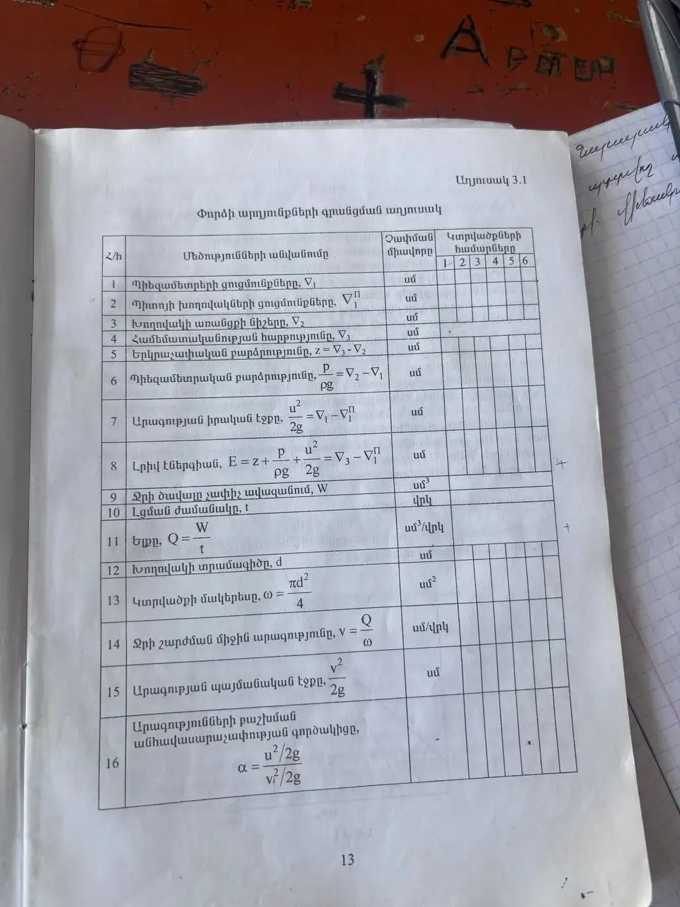
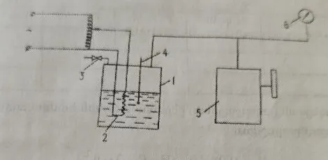
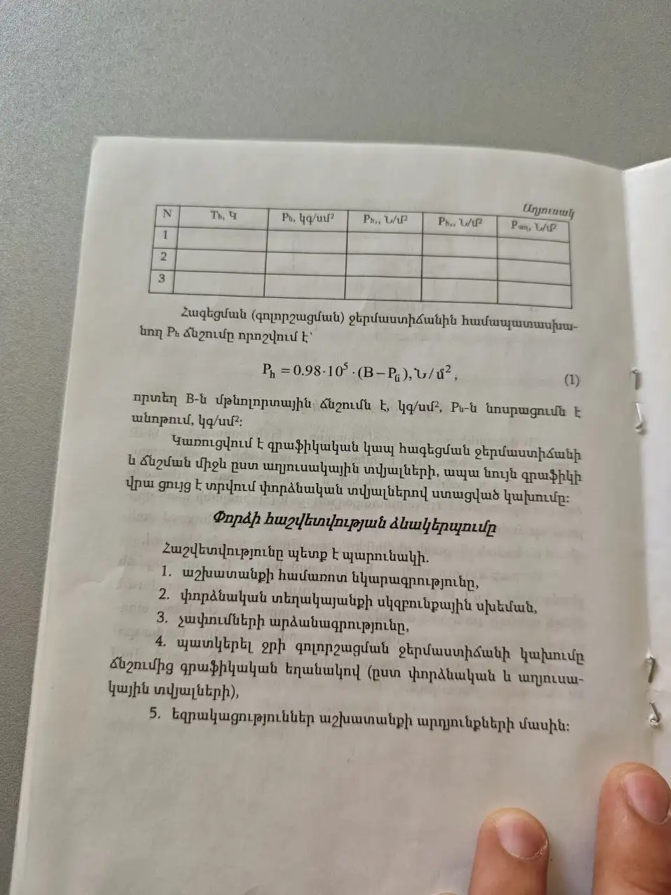
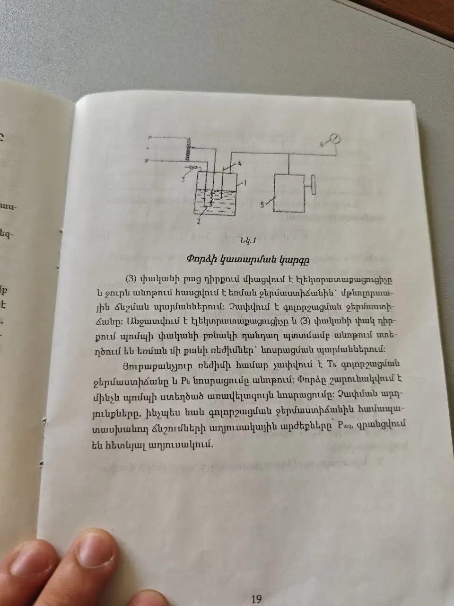
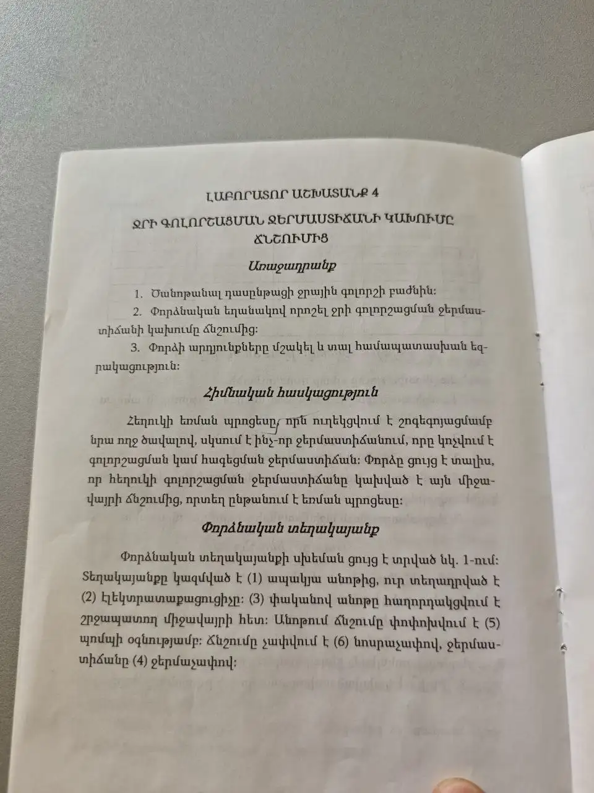

Լաբորատոր աշխատանքներ
Տեքստը՝ մեթոդական ձեռնարկից (լուսանկարները՝ ամեն աշխատանքի վերջում)։ Աղյուսակները կարելի է լրացնել այստեղ՝ հաշվարկները կատարվում են ձեռնարկի բանաձևերով։ Յուրաքանչյուր աշխատանքի վերջում կա 🎓 պաշտպանություն՝ դասախոսի հարցերը և պատասխանները. պատասխանները ձեռնարկից են, իսկ ✦ նշանով մասերը՝ ընդհանուր դասագրքային գիտելիք։
Բեռնուլիի հավասարման ցուցադրումը
Բեռնուլիի հավասարումը հիդրոդինամիկայի հիմնական հավասարումն է և իդեալական հեղուկի ամբողջ հոսքի համար ունի հետևյալ տեսքը.
որտեղ՝ z-ը երկրաչափական բարձրությունն է, որը կտրվածքի ծանրության կենտրոնի ուղղաձիգ հեռավորությունն է նախապես ընտրված համեմատական հարթությունից, p-ն ճնշումն է տվյալ կտրվածքում, v-ն՝ հեղուկի շարժման միջին արագությունը կտրվածքում, α-ն՝ արագությունների բաշխման անհավասարաչափության գործակիցը, p/ρg-ն պյեզոմետրական բարձրությունն է, որը և ցույց է տալիս տվյալ կտրվածքում հեղուկի ճնշումը՝ արտահայտված հեղուկի սյան բարձրությամբ, αv²/2g-ն արագության բարձրությունը կամ էջքն է և ցույց է տալիս, թե կտրվածքում արագությունից կախված ինչպիսի լրացուցիչ ճնշում է առաջանում (նկ. 3.1)։
Նշված երեք բարձրությունների գումարը ըստ Բեռնուլիի հավասարման մնում է հաստատուն տվյալ կտրվածքի համար։
Էներգետիկ տեսակետից Բեռնուլիի հավասարումը ցույց է տալիս, որ միավոր կշռով հեղուկի դիրքի (z), ճնշման (p/ρg), պոտենցիալ ու կինետիկ (αv²/2g) էներգիաների գումարը, այսինքն՝ կտրվածքի լրիվ տեսակարար էներգիան բոլոր կտրվածքների համար հաստատուն մեծություն է։ Այսինքն՝ Բեռնուլիի հավասարումը էներգիայի պահպանման օրենքն է միավոր կշռով հեղուկի համար։
Հեղուկի իրական հոսքի երկու կտրվածքների համար Բեռնուլիի հավասարումն ունի հետևյալ տեսքը.
որտեղ Σhw-ն էներգիայի կորուստների գումարն է երկու կտրվածքների միջև (կորուստները լինում են տեղական և երկայնական, որոնց մանրամասն ուսումնասիրությունը կտրվի 7 և 8 փորձերում)։
Կտրվածքներում պյեզոմետրերի ցուցմունքները միացնող գիծը կոչվում է պյեզոմետրական գիծ, իսկ Պիտոյի խողովակների ցուցմունքները (տեսակարար էներգիային համապատասխանող մակարդակները) միացնող գիծը՝ էներգիայի գիծ։
Փորձի նպատակը
Փոփոխական կտրվածքով խողովակի տարբեր կտրվածքներում չափել Բեռնուլիի հավասարման անդամները և կառուցել էներգիայի ու պյեզոմետրական գծերը։
Փորձասարքի նկարագրությունը
Փորձասարքը (նկ. 3.2) կազմված է միմյանց հաջորդաբար միացված տարբեր տրամագծի երեք խողովակներից, որոնց տարբեր կտրվածքներում տեղադրված են պյեզոմետրեր և Պիտոյի խողովակներ։ Ճնշումային A ավազանում ազատ թափքի շնորհիվ պահպանվում է ջրի հաստատուն մակարդակ։ Խողովակով անցնող ջրի ելքը որոշվում է ծավալային եղանակով՝ B չափիչ ավազանի, M սանդղակի և C վայրկենաչափի միջոցով։

Փորձի ընթացքը
Բացել K₁ փականը (K₂-ը փակ է) և A ավազանը լցնել ջրով։ Երբ ջուրը պյեզոմետրերում հասնի ճնշումային մակարդակի (սկզբնական էներգիայի մակարդակ), բացել K₂ փականը, խողովակում ապահովել ջրի շարժման հաստատուն ռեժիմ, որից հետո կատարել հետևյալ չափումները.
- Պյեզոմետրական բարձրությունները՝ ըստ պյեզոմետրերի ցուցմունքների։
- Լրիվ էներգիայի բարձրությունները՝ ըստ Պիտոյի խողովակի ցուցմունքների։
- Ելքը ծավալային եղանակով, որի համար M շրջադարձային թիակն ուղղել B չափիչ ավազանի մեջ (K₃ փականը փակ է), L սանդղակի որոշակի ցուցմունքի դեպքում միացնել վայրկենաչափը։ Որոշակի t ժամանակամիջոցից հետո նորից գրանցել սանդղակի ցուցմունքը, հաշվել ջրի W ծավալը և որոշել ելքը՝ Q = Wt հարաբերությամբ։
Փորձի և հաշվարկների արդյունքները գրանցել աղյուսակ 3.1-ում և դրանց հիման վրա կառուցել էներգիայի ու պյեզոմետրական գծերը։
Աղյուսակ 3.1. Փորձի արդյունքների գրանցման աղյուսակ
Լրացրեք սպիտակ դաշտերը. կապույտ վանդակները հաշվվում են ինքնաշխատ՝ ձեռնարկի բանաձևերով (g = 981 սմ/վրկ²)։ Ցուցմունքները (∇) կարդացվում են վահանակի սանդղակից, որի 0-ն վերևում է։
| Հ/հ | Մեծությունների անվանումը | Միավոր | 1 | 2 | 3 | 4 | 5 | 6 |
|---|
🎓 Պաշտպանություն՝ ինչ պատասխանել դասախոսին
Աշխատանքի նպատակն էր փոփոխական կտրվածքով խողովակի տարբեր կտրվածքներում չափել Բեռնուլիի հավասարման անդամները և կառուցել էներգիայի ու պյեզոմետրական գծերը։ Փորձասարքը տարբեր տրամագծի երեք հաջորդաբար միացված խողովակներից է, որոնց կտրվածքներում կան պյեզոմետրեր և Պիտոյի խողովակներ։ A ավազանում մակարդակը հաստատուն է։ Հաստատուն ռեժիմում գրանցեցինք պյեզոմետրերի և Պիտոյի խողովակների ցուցմունքները, իսկ ելքը որոշեցինք ծավալային եղանակով՝ Q = W/t։ Հաշվեցինք z, p/ρg, u²/2g, E, միջին արագությունը v = Q/ω և α գործակիցը։ Ստացանք, որ լրիվ էներգիան հոսքի ուղղությամբ նվազում է կորուստների պատճառով, իսկ նեղ կտրվածքում արագությունն աճում է, և պյեզոմետրական բարձրությունը նվազում է. էներգիայի մի տեսակը փոխակերպվում է մյուսին։
1. Ո՞րն է աշխատանքի նպատակը։
Փոփոխական կտրվածքով խողովակի տարբեր կտրվածքներում չափել Բեռնուլիի հավասարման անդամները և կառուցել էներգիայի ու պյեզոմետրական գծերը։
2. Գրեք Բեռնուլիի հավասարումը և բացատրեք անդամները։
Իդեալական հեղուկի համար՝ z + p/ρg + αv²/2g = const։
- z՝ երկրաչափական բարձրություն. կտրվածքի ծանրության կենտրոնի բարձրությունը համեմատական հարթությունից,
- p/ρg՝ պյեզոմետրական բարձրություն. ճնշումը՝ արտահայտված հեղուկի սյան բարձրությամբ,
- αv²/2g՝ արագության բարձրություն (էջք),
- α՝ արագությունների բաշխման անհավասարաչափության գործակից։
Երեք բարձրությունների գումարը բոլոր կտրվածքների համար հաստատուն է։
3. Ի՞նչ իմաստ ունի հավասարումը էներգետիկ տեսակետից։
Այն էներգիայի պահպանման օրենքն է միավոր կշռով հեղուկի համար։ z-ը դիրքի, p/ρg-ն ճնշման տեսակարար էներգիան է (միասին՝ պոտենցիալ էներգիա), αv²/2g-ն՝ կինետիկ էներգիան։ Նրանց գումարը՝ լրիվ տեսակարար էներգիան, բոլոր կտրվածքներում նույնն է։
4. Ինչո՞վ է տարբերվում իրական հեղուկի հավասարումը։
Ավելանում է Σhw՝ էներգիայի կորուստները երկու կտրվածքների միջև.
z₁ + p₁/ρg + αv₁²/2g = z₂ + p₂/ρg + αv₂²/2g + Σhw
Կորուստները լինում են տեղական (նեղացում, լայնացում, շրջադարձ, փական) և երկայնական (շփում խողովակի երկարությամբ)։ Դրա համար էներգիայի գիծը հոսքի ուղղությամբ միշտ իջնում է։
5. Ի՞նչ է պյեզոմետրական գիծը, ի՞նչ է էներգիայի գիծը։
Պյեզոմետրական գիծ՝ պյեզոմետրերի ցուցմունքները (z + p/ρg) միացնող գիծը։ Էներգիայի գիծ՝ Պիտոյի խողովակների ցուցմունքները (լրիվ տեսակարար էներգիան) միացնող գիծը։ Նրանց միջև հեռավորությունը արագության էջքն է։
6. Ի՞նչ է չափում պյեզոմետրը, իսկ Պիտոյի խողովակը։
Պյեզոմետրը՝ ստատիկ ճնշումը (պյեզոմետրական բարձրությունը p/ρg)։ Պիտոյի խողովակը ուղղված է հոսքին ընդառաջ, ուստի ցույց է տալիս նաև արագության էջքը՝ p/ρg + u²/2g։ Նրանց ցուցմունքների տարբերությունը u²/2g = ∇₁ − ∇₁ᴾ է, որից կարելի է գտնել արագությունը։
7. Ինչու՞ է նեղ կտրվածքում ջուրը պյեզոմետրում ավելի ցածր։
Ելքը բոլոր կտրվածքներում նույնն է (Q = vω = const)։ Նեղ կտրվածքում ω-ն փոքր է, ուստի v-ն մեծ է, և կինետիկ էներգիան աճում է։ Լրիվ էներգիան չի կարող աճել, ուստի նվազում է ճնշման էներգիան՝ p/ρg-ն։ Լայն կտրվածքում հակառակն է։
8. Ինչպե՞ս որոշեցիք ելքը։
Ծավալային եղանակով. M շրջադարձային թիակով ջուրն ուղղեցինք B չափիչ ավազանի մեջ (K₃-ը փակ է), L սանդղակի որոշակի ցուցմունքի պահին միացրինք վայրկենաչափը, t ժամանակից հետո նորից գրանցեցինք ցուցմունքը, գտանք W ծավալը և Q = W/t։
9. Ինչպե՞ս հաշվեցիք աղյուսակի մեծությունները։
- z = ∇₃ − ∇₂, p/ρg = ∇₂ − ∇₁, u²/2g = ∇₁ − ∇₁ᴾ, E = ∇₃ − ∇₁ᴾ
- ω = πd²/4, v = Q/ω, v²/2g, α = (u²/2g)/(v²/2g)
∇-ները կարդացվում են վահանակի սանդղակից, որի զրոն վերևում է, դրա համար բարձրությունները ստացվում են տարբերություններով։
10. Ի՞նչ է α գործակիցը։
Արագությունների բաշխման անհավասարաչափության գործակիցը։ Կտրվածքում արագությունը նույնը չէ՝ առանցքում մեծ է, պատերի մոտ փոքր, իսկ մենք հաշվում ենք միջին v-ով։ α-ն ուղղում է այդ տարբերությունը։ Այս աշխատանքում α = (u²/2g)/(v²/2g), որտեղ u-ն Պիտոյի խողովակով չափված արագությունն է։ ✦ Սովորաբար α > 1. տուրբուլենտ հոսքում ≈ 1,05–1,1, լամինարում՝ 2։
11. Ինչու՞ էր պետք հաստատուն ռեժիմ։
Բեռնուլիի հավասարումը գրված է ստացիոնար հոսքի համար, երբ պարամետրերը ժամանակի ընթացքում չեն փոխվում։ A ավազանի ազատ թափքը պահում է մակարդակը հաստատուն, ուստի ելքն ու ցուցմունքները կայուն են։
12. Ի՞նչ եզրակացություն արեցիք։
- Լրիվ էներգիան (էներգիայի գիծը) հոսքի ուղղությամբ միշտ նվազում է, տարբերությունը կորուստներն են (Σhw)։
- Պյեզոմետրական գիծը կարող է և իջնել, և բարձրանալ. նեղ կտրվածքում իջնում է, լայնացող հատվածում՝ բարձրանում։
- Ճնշման և կինետիկ էներգիաները փոխակերպվում են մեկը մյուսին, ինչը հաստատում է Բեռնուլիի հավասարումը։
📷 Ձեռնարկի էջերը (10–13)




Ջրի գոլորշացման ջերմաստիճանի կախումը ճնշումից
Առաջադրանք
- Ծանոթանալ դասընթացի ջրային գոլորշի բաժնին։
- Փորձնական եղանակով որոշել ջրի գոլորշացման ջերմաստիճանի կախումը ճնշումից։
- Փորձի արդյունքները մշակել և տալ համապատասխան եզրակացություն։
Հիմնական հասկացություն
Հեղուկի եռման պրոցեսը, որն ուղեկցվում է շոգեգոյացմամբ նրա ողջ ծավալով, սկսում է ինչ-որ ջերմաստիճանում, որը կոչվում է գոլորշացման կամ հագեցման ջերմաստիճան։ Փորձը ցույց է տալիս, որ հեղուկի գոլորշացման ջերմաստիճանը կախված է այն միջավայրի ճնշումից, որտեղ ընթանում է եռման պրոցեսը։
Փորձնական տեղակայանք
Փորձնական տեղակայանքի սխեման ցույց է տրված նկ. 1-ում։ Տեղակայանքը կազմված է (1) ապակյա անոթից, ուր տեղադրված է (2) էլեկտրատաքացուցիչը։ (3) փականով անոթը հաղորդակցվում է շրջապատող միջավայրի հետ։ Անոթում ճնշումը փոփոխվում է (5) պոմպի օգնությամբ։ Ճնշումը չափվում է (6) նոսրաչափով, ջերմաստիճանը՝ (4) ջերմաչափով։

Փորձի կատարման կարգը
(3) փականի բաց դիրքում միացվում է էլեկտրատաքացուցիչը և ջուրն անոթում հասցվում է եռման ջերմաստիճանին՝ մթնոլորտային ճնշման պայմաններում։ Չափվում է գոլորշացման ջերմաստիճանը։ Անջատվում է էլեկտրատաքացուցիչը և (3) փականի փակ դիրքում պոմպի փականի բռնակի դանդաղ պտտմամբ անոթում ստեղծում են եռման մի քանի ռեժիմներ՝ նոսրացման պայմաններում։
Յուրաքանչյուր ռեժիմի համար չափվում է Tհ գոլորշացման ջերմաստիճանը և Pն նոսրացումը անոթում։ Փորձը շարունակվում է մինչև պոմպի ստեղծած առավելագույն նոսրացումը։ Չափման արդյունքները, ինչպես նաև գոլորշացման ջերմաստիճանին համապատասխանող ճնշումների աղյուսակային արժեքները՝ Pաղ, գրանցվում են հետևյալ աղյուսակում.
| N | Tհ, Կ | Pն, կգ/սմ² | Pհ, Ն/մ² | Pաղ, Ն/մ² |
|---|
Pհ-ն հաշվվում է բանաձև (1)-ով։ Pաղ-ը գրեք ջրային գոլորշու աղյուսակից՝ տվյալ Tհ-ի համար։ Ձեռնարկի աղյուսակում Pհ սյունը տպված է երկու անգամ. այստեղ թողել եմ մեկը։
Հագեցման (գոլորշացման) ջերմաստիճանին համապատասխանող Pհ ճնշումը որոշվում է՝
որտեղ B-ն մթնոլորտային ճնշումն է, կգ/սմ², Pն-ն նոսրացումն է անոթում, կգ/սմ²։
Կառուցվում է գրաֆիկական կապ հագեցման ջերմաստիճանի և ճնշման միջև ըստ աղյուսակային տվյալների, ապա նույն գրաֆիկի վրա ցույց է տրվում փորձնական տվյալներով ստացված կախումը։
Փորձի հաշվետվության ձևակերպումը
Հաշվետվությունը պետք է պարունակի.
- աշխատանքի համառոտ նկարագրությունը,
- փորձնական տեղակայանքի սկզբունքային սխեման,
- չափումների արձանագրությունը,
- պատկերել ջրի գոլորշացման ջերմաստիճանի կախումը ճնշումից գրաֆիկական եղանակով (ըստ փորձնական և աղյուսակային տվյալների),
- եզրակացություններ աշխատանքի արդյունքների մասին։
🎓 Պաշտպանություն՝ ինչ պատասխանել դասախոսին
Աշխատանքի նպատակն էր փորձնական եղանակով որոշել ջրի գոլորշացման ջերմաստիճանի կախումը ճնշումից։ Տեղակայանքը ապակյա անոթ է էլեկտրատաքացուցիչով, փականով, ջերմաչափով, պոմպով և նոսրաչափով։ Սկզբում ջուրը եռացրինք մթնոլորտային ճնշման տակ և չափեցինք եռման ջերմաստիճանը։ Հետո փակեցինք փականը և պոմպով անոթում ստեղծեցինք մի քանի նոսրացման ռեժիմներ. յուրաքանչյուրում չափեցինք Tհ-ն և Pն-ն։ Ճնշումը հաշվեցինք Pհ = 0,98·10⁵·(B − Pն) բանաձևով և արդյունքները համեմատեցինք աղյուսակային արժեքների հետ։ Ստացանք, որ ճնշման նվազմամբ գոլորշացման ջերմաստիճանը նվազում է։
1. Ո՞րն է աշխատանքի նպատակը։
Փորձնական եղանակով որոշել ջրի գոլորշացման ջերմաստիճանի կախումը ճնշումից, արդյունքները մշակել և համեմատել աղյուսակային տվյալների հետ։
2. Ի՞նչ է գոլորշացման (հագեցման) ջերմաստիճանը։
Այն ջերմաստիճանը, որում սկսվում է հեղուկի եռումը՝ շոգեգոյացում հեղուկի ողջ ծավալով։ Այն կոչվում է նաև հագեցման ջերմաստիճան։
3. Ինչպե՞ս է գոլորշացման ջերմաստիճանը կախված ճնշումից։
Գոլորշացման ջերմաստիճանը կախված է այն միջավայրի ճնշումից, որտեղ ընթանում է եռումը. ճնշումը նվազում է՝ ջերմաստիճանը նվազում է, ճնշումն աճում է՝ աճում է։ ✦ Օր.՝ 1 մթն ճնշման տակ ջուրը եռում է 100 °C-ում (373 Կ), լեռներում՝ ավելի ցածր, ճնշման կաթսայում՝ ավելի բարձր։
4. Ինչու՞ է այդպես։
✦ Եռումը սկսվում է, երբ հեղուկի հագեցած գոլորշու ճնշումը հավասարվում է արտաքին ճնշմանը։ Եթե արտաքին ճնշումը փոքր է, այդ հավասարությունը ստացվում է ավելի ցածր ջերմաստիճանում։
5. Պատմեք տեղակայանքի կառուցվածքը։
(1) ապակյա անոթ, որում տեղադրված է (2) էլեկտրատաքացուցիչը, (3) փական, որով անոթը հաղորդակցվում է շրջապատող միջավայրի հետ, (4) ջերմաչափ, (5) պոմպ, որով փոխվում է ճնշումը անոթում, (6) նոսրաչափ, որով չափվում է ճնշումը (նոսրացումը)։
6. Ինչպե՞ս կատարեցիք փորձը։
- (3) փականը բաց է. միացրինք տաքացուցիչը, ջուրը եռացրինք մթնոլորտային ճնշման տակ և չափեցինք գոլորշացման ջերմաստիճանը։
- Անջատեցինք տաքացուցիչը, փակեցինք (3) փականը և պոմպի փականի բռնակի դանդաղ պտտմամբ ստեղծեցինք եռման մի քանի ռեժիմ նոսրացման պայմաններում։
- Ամեն ռեժիմում չափեցինք Tհ-ն և Pն-ն, մինչև պոմպի ստեղծած առավելագույն նոսրացումը։
7. Ինչպե՞ս հաշվեցիք ճնշումը։
Pհ = 0,98·10⁵·(B − Pն), Ն/մ², որտեղ B-ն մթնոլորտային ճնշումն է, Pն-ն՝ նոսրացումը անոթում (երկուսն էլ կգ/սմ²)։ B − Pն-ն անոթում բացարձակ ճնշումն է, իսկ 0,98·10⁵-ով կգ/սմ²-ը փոխարկվում է Ն/մ²-ի (1 կգ/սմ² ≈ 0,98·10⁵ Պա)։
8. Ի՞նչ է նոսրացումը (վակուումը)։
Մթնոլորտային ճնշման և անոթում բացարձակ ճնշման տարբերությունը։ Նոսրաչափը ցույց է տալիս, թե որքանով է ճնշումը անոթում ցածր մթնոլորտայինից։
9. Ինչու՞ եռման ժամանակ ջերմաստիճանը չի փոխվում։
✦ Եռման ժամանակ հաղորդվող ջերմությունը ծախսվում է գոլորշացման (թաքնված ջերմության) վրա, ոչ թե տաքացման, ուստի տվյալ ճնշման դեպքում ջերմաստիճանը հաստատուն է։
10. Ինչու՞ են փորձնական և աղյուսակային արժեքները տարբերվում։
✦ Չափման սխալներ (ջերմաչափ, նոսրաչափ), ռեժիմը լրիվ կայունացած չէր, ջուրը մաքուր չէ (լուծված գազեր, աղեր), մթնոլորտային ճնշումը B ընդունվել է մոտավոր։
11. Ի՞նչ գրաֆիկ եք կառուցել։
Tհ-ի կախումը ճնշումից. նախ ըստ աղյուսակային տվյալների (Pաղ), ապա նույն գրաֆիկի վրա՝ ըստ փորձնական տվյալների (Pհ)։ Երկու կորն էլ աճող են. ճնշումը մեծանում է՝ ջերմաստիճանը մեծանում է։
12. Ի՞նչ եզրակացություն արեցիք։
- Ջրի գոլորշացման ջերմաստիճանը կախված է ճնշումից. ճնշման նվազմամբ այն նվազում է։
- Փորձնական կորը մոտ է աղյուսակայինին, իսկ տարբերությունը չափման սխալներից է։
📷 Ձեռնարկի էջերը



Հաստատուն ճնշման պայմաններում օդի միջին ծավալային ջերմունակության որոշումը
Ձեռնարկի տեքստը դեռ չունենք, միայն պաշտպանության հարցերը։ Պատասխանները թերմոդինամիկայի դասագրքային նյութից են։ Ուղարկեք ձեռնարկի էջերը, և կավելացնեմ աշխատանքի նկարագրությունն ու աղյուսակը։
🎓 Պաշտպանության հարցեր
1.1 Տալ ջերմունակության սահմանումը։
Ջերմունակություն՝ ջերմության այն քանակը, որն անհրաժեշտ է մարմնի ջերմաստիճանը 1 աստիճանով փոխելու համար.
C = dQ / dT
Տեսակարար ջերմունակություն՝ նույնը միավոր քանակով նյութի համար (1 կգ, 1 մ³ կամ 1 կմոլ). c = dq / dT
1.2 Ինչպիսի՞ միավորներով է չափվում ջերմունակությունը։
- Զանգվածային c՝ Ջ/(կգ·Կ) (կՋ/(կգ·Կ))
- Ծավալային c′՝ Ջ/(մ³·Կ). 1 մ³ գազը վերցվում է նորմալ պայմաններում (0 °C, 760 մմ սնդ. սյուն)
- Մոլային μc՝ Ջ/(կմոլ·Կ)
Կապը՝ c = μc / μ, c′ = μc / 22,4 = c·ρն (22,4 մ³/կմոլ՝ 1 կմոլի ծավալը նորմալ պայմաններում)։
1.3 Տալ իսկական և միջին ջերմունակությունների գաղափարը։
Իսկական՝ ջերմունակությունը տվյալ ջերմաստիճանում (անվերջ փոքր փոփոխության համար). c = dq / dt
Միջին՝ t₁…t₂ միջակայքում հաղորդված ջերմության և ջերմաստիճանի փոփոխության հարաբերությունը. cմ = q / (t₂ − t₁)
Ջերմությունը՝ q = cմ(t₂ − t₁), իսկ 0 °C-ից տրված աղյուսակային միջին ջերմունակություններով՝ q = cմ2t₂ − cմ1t₁
Իսկականը կորի կետում շոշափողի թեքությունն է, միջինը՝ q(t) կորի հատվածը միացնող ուղղի թեքությունը։
1.4 Ինչպիսի՞ գործոններից են կախված իդեալական և իրական գազերի ջերմունակությունները։
- Գազի բնույթից՝ մոլեկուլի ատոմների թվից (միատոմ, երկատոմ, եռատոմ),
- պրոցեսի բնույթից՝ cp (p = const) > cv (v = const), քանի որ p = const-ում ջերմության մի մասը ծախսվում է ընդարձակման աշխատանքի վրա. Մայերի հավասարումը՝ cp − cv = R,
- ջերմաստիճանից՝ ջերմաստիճանի աճով ջերմունակությունն աճում է։
Իդեալական գազ՝ կախված է միայն գազի տեսակից, պրոցեսից և ջերմաստիճանից։ Իրական գազ՝ նաև ճնշումից։
Ադիաբատի ցուցչի հավասարումը
Ձեռնարկի տեքստը դեռ չունենք, միայն պաշտպանության հարցերը։ Պատասխանները թերմոդինամիկայի դասագրքային նյութից են։
🎓 Պաշտպանության հարցեր
2.1 Տալ հիմնական թերմոդինամիկական պրոցեսների բնորոշումը և գրել դրանց հավասարումները։
| Պրոցես | Պայման | Հավասարում |
|---|---|---|
| Իզոխոր | v = const | p/T = const |
| Իզոբար | p = const | v/T = const |
| Իզոթերմ | T = const | pv = const |
| Ադիաբատ | q = 0 | pvk = const |
| Պոլիտրոպ | c = const | pvn = const |
Ադիաբատում ջերմափոխանակություն չկա։ Պոլիտրոպը ընդհանուր դեպքն է. n = 0՝ իզոբար, n = 1՝ իզոթերմ, n = k՝ ադիաբատ, n = ±∞՝ իզոխոր։
2.2 Բացատրել p-v դիագրամում միևնույն կետից տարված ադիաբատ և իզոթերմ պրոցեսների փոխադարձ դասավորումը։
Ադիաբատն ավելի զառիթափ է, քանի որ k > 1. թեքությունները՝
իզոթերմ՝ dp/dv = −p/v, ադիաբատ՝ dp/dv = −k·p/v
- Սեղմման դեպքում (կետից ձախ) ադիաբատն անցնում է իզոթերմից վեր. ջերմություն չի հեռացվում, գազը տաքանում է, և ճնշումն աճում է ավելի արագ։
- Ընդարձակման դեպքում (կետից աջ) ադիաբատն անցնում է իզոթերմից ներքև. աշխատանքը կատարվում է ներքին էներգիայի հաշվին, գազը սառչում է, և ճնշումն ընկնում է ավելի արագ։
2.3 Ինչի՞ց է կախված ադիաբատի ցուցչի թվային արժեքը։
k = cp / cv
- Գազի ատոմայնությունից (մոլեկուլի ազատության աստիճաններից). միատոմ՝ k = 1,67, երկատոմ՝ k = 1,4 (օդ), եռատոմ և բազմատոմ՝ k ≈ 1,29–1,33,
- ջերմաստիճանից՝ ջերմաստիճանի աճով ջերմունակություններն աճում են, և k-ն նվազում է (k = 1 + R/cv)։
Միշտ k > 1, քանի որ cp = cv + R > cv։
2.4 Պրոցեսների պատկերումը T-s դիագրամում։
T-s դիագրամում կորի տակ մակերեսը պրոցեսի ջերմությունն է՝ q = ∫T ds. ds > 0՝ ջերմությունը հաղորդվում է, ds < 0՝ հեռացվում։
| Պրոցես | Գիծը T-s-ում | Ջերմությունը |
|---|---|---|
| Իզոթերմ, T = const | հորիզոնական ուղիղ | q = T(s₂ − s₁) |
| Ադիաբատ, q = 0 | ուղղաձիգ ուղիղ (s = const, իզոէնտրոպ) | q = 0 |
| Իզոխոր, v = const | լոգարիթմական կոր, Δs = cvln(T₂/T₁) | q = cv(T₂ − T₁) |
| Իզոբար, p = const | լոգարիթմական կոր, Δs = cpln(T₂/T₁) | q = cp(T₂ − T₁) |
| Պոլիտրոպ, pvn = const | լոգարիթմական կոր, Δs = cnln(T₂/T₁) | q = cn(T₂ − T₁) |
Քանի որ cp > cv, միևնույն կետից տարված իզոխորն ավելի զառիթափ է, իզոբարը՝ ավելի հարթ. նույն ΔT-ի դեպքում իզոբարում Δs-ը և ջերմությունն ավելի մեծ են։
Եզրակացություն. p-v դիագրամում կորի տակ մակերեսը աշխատանքն է (ℓ = ∫p dv), իսկ T-s-ում՝ ջերմությունը (q = ∫T ds)։